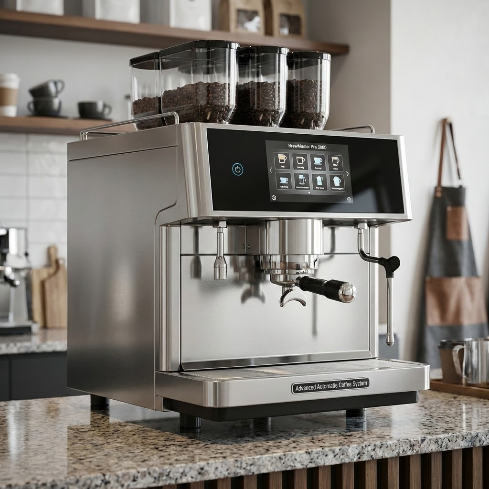
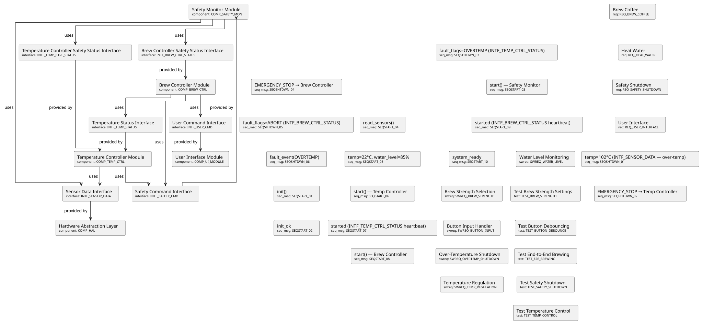
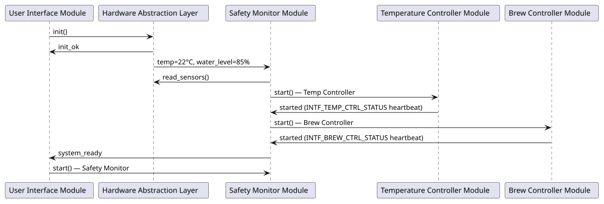
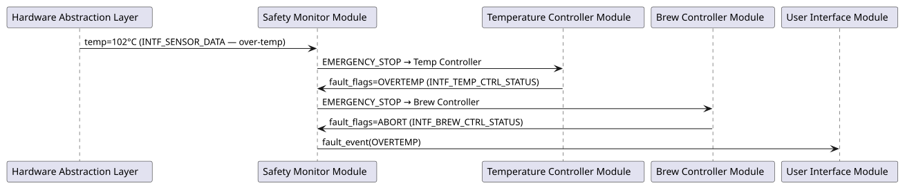
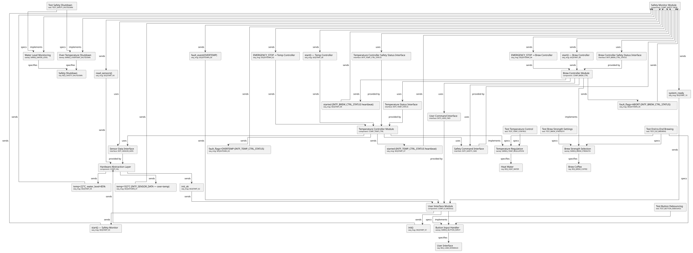

☕️ Coffee Machine Example
This example demonstrates a complete traceability chain for a coffee machine system, from high-level requirements down to implementation and test cases.
The BrewMaster Pro 3000 is an advanced automatic coffee machine designed for commercial and high-end residential use. Featuring precision temperature control, customizable brew strength settings, and comprehensive safety mechanisms, it represents the cutting edge of coffee brewing technology. This document traces the complete development lifecycle from initial customer needs through verified implementation.

System Requirements
The system requirements capture the fundamental capabilities that the BrewMaster Pro 3000 must deliver to meet customer expectations and safety standards. These high-level requirements define what the system does from an external perspective, focusing on user-visible behavior and safety constraints. Each requirement has been derived from market analysis, customer feedback, and applicable safety regulations for household appliances.
RequirementBrew CoffeeREQ_BREW_COFFEE
The coffee machine shall be able to brew coffee with user-selected strength (weak, medium, strong).
RequirementHeat WaterREQ_HEAT_WATER
The coffee machine shall heat water to the appropriate temperature (85-95°C) for brewing coffee.
RequirementUser InterfaceREQ_USER_INTERFACE
The coffee machine shall provide a user interface with buttons for selecting coffee strength and starting the brewing process.
RequirementSafety ShutdownREQ_SAFETY_SHUTDOWN
The coffee machine shall automatically shut down if the water temperature exceeds 100°C or if no water is detected.
Details
| Status | open |
|---|---|
| Tags | safety, critical |
| Collapse | true |
specified by
Software Requirements
The software requirements section refines the high-level system requirements into detailed, implementable specifications for the embedded control system. The BrewMaster Pro 3000 runs on a custom Rust-based embedded platform with real-time capabilities, chosen for its memory safety guarantees, zero-cost abstractions, and excellent embedded systems support. These requirements specify precise timing constraints, control algorithms, and safety-critical behavior that must be implemented in software. Each software requirement is traceable back to one or more system requirements, ensuring complete coverage of customer needs.
SW_RequirementTemperature RegulationSWREQ_TEMP_REGULATION
The temperature control software shall monitor the water temperature sensor and regulate the heating element to maintain temperature between 85-95°C using PID control.
Details
| Status | open |
|---|---|
| Tags | control, heating |
| Collapse | true |
SW_RequirementOver-Temperature ShutdownSWREQ_OVERTEMP_SHUTDOWN
The software shall continuously monitor water temperature and trigger an emergency shutdown within 100ms if temperature exceeds 100°C to prevent boiling and potential hazards.
Details
| Status | open |
|---|---|
| Tags | safety, critical |
| Collapse | true |
SW_RequirementBrew Strength SelectionSWREQ_BREW_STRENGTH
The software shall implement brew strength selection by controlling the water flow rate and brewing time:
Weak: 180ml water, 3 minutes
Medium: 180ml water, 4 minutes
Strong: 180ml water, 5 minutes
Details
| Status | open |
|---|---|
| Tags | control, brewing |
| Collapse | true |
SW_RequirementButton Input HandlerSWREQ_BUTTON_INPUT
The software shall process button inputs with debouncing and trigger appropriate actions (strength selection, start brewing, stop/cancel).
Details
| Status | open |
|---|---|
| Tags | ui, input |
| Collapse | true |
specifies
implemented by
test_cases
SW_RequirementWater Level MonitoringSWREQ_WATER_LEVEL
The software shall continuously monitor the water level sensor and prevent brewing operations when water level is below minimum threshold.
Details
| Status | open |
|---|---|
| Tags | safety, monitoring |
| Collapse | true |
Software Architecture
The software architecture defines the modular structure of the BrewMaster Pro 3000's embedded control system. The architecture follows a layered approach with clear separation of concerns: safety-critical functions are isolated in dedicated modules, control algorithms are encapsulated for reusability, and user interface logic is decoupled from core brewing operations. This modular design enables independent testing, facilitates maintenance, and provides clear interfaces between components.
The architecture emphasizes fail-safe design principles. The Safety Monitor Module operates with the highest priority and can override all other subsystems. Module dependencies are carefully managed to prevent circular references and ensure deterministic behavior. The following diagram shows the architectural modules and their relationships:
ComponentTemperature Controller ModuleCOMP_TEMP_CTRL
Module responsible for PID-based temperature control. Interfaces:
Input: Temperature sensor (ADC)
Output: Heating element PWM control
Safety: Reports temperature status to Safety Monitor
Safety: Responds to emergency shutdown commands
Details
| Status | open |
|---|---|
| Tags | module, control |
| Collapse | true |
| Template | component_arch |
implements
uses
sends
sends
provides
sent by
sent by
ComponentBrew Controller ModuleCOMP_BREW_CTRL
Module managing the brewing process state machine. States: IDLE, HEATING, BREWING, COMPLETE, ERROR. Controls pump and valve timing based on selected strength. Waits for temperature ready signal before initiating brew cycle. Monitors safety status continuously.
Details
| Status | open |
|---|---|
| Tags | module, control |
| Collapse | true |
| Template | component_arch |
implements
uses
sends
sends
provides
sent by
sent by
ComponentUser Interface ModuleCOMP_UI_MODULE
Module handling all user interactions including button debouncing, LED status indicators, and display updates. Interfaces with the Brew Controller to send user commands (strength selection, start/stop).
Details
| Status | open |
|---|---|
| Tags | module, ui |
| Collapse | true |
| Template | component_arch |
implements
sends
provides
sent by
sent by
ComponentSafety Monitor ModuleCOMP_SAFETY_MON
Module performing continuous safety checks on temperature and water level. Implements fail-safe shutdown procedures.
Details
| Status | open |
|---|---|
| Tags | module, safety |
| Collapse | true |
| Template | component_arch |
implements
uses
sends
sends
provides
sent by
sent by
ComponentHardware Abstraction LayerCOMP_HAL
Module providing abstraction over hardware sensors and actuators. Handles low-level sensor reading via ADC, signal conditioning, and calibration. Interfaces:
Input: Temperature sensor (NTC thermistor via ADC channel 0)
Input: Water level sensor (capacitive via ADC channel 1)
Output: Heating element control (PWM channel)
Output: Pump control (GPIO)
Implements DMA-based ADC sampling at 100Hz with automatic averaging and outlier rejection for robust sensor readings.
Details
| Status | open |
|---|---|
| Tags | module, hardware, driver |
| Collapse | true |
| Template | component_arch |
Component Interfaces
The following interfaces define the communication contracts between architectural components. Each interface specifies the data exchanged, protocols used, and timing constraints to ensure deterministic and safe inter-component communication.
InterfaceTemperature Status InterfaceINTF_TEMP_STATUS
Provider: Temperature Controller Module
Consumer: Brew Controller Module
Description: Provides current temperature readings and heating status to the brew controller.
Data Elements:
current_temp: int16 (°C × 10 for 0.1°C resolution)
target_temp: int16 (°C × 10)
is_ready: bool (true when within target range)
heating_active: bool
Protocol: Shared memory with atomic updates, 100ms refresh rate
InterfaceSafety Command InterfaceINTF_SAFETY_CMD
Provider: Safety Monitor Module
Consumers: Temperature Controller, Brew Controller
Description: Emergency shutdown commands from safety monitor to all controlled subsystems.
Commands:
EMERGENCY_STOP: Immediate shutdown (<100ms response required)
RESUME_NORMAL: Clear emergency state after fault resolved
Protocol: Interrupt-driven with hardware watchdog backup, highest priority
Details
| Status | open |
|---|---|
| Tags | interface, safety |
| Collapse | true |
InterfaceTemperature Controller Safety Status InterfaceINTF_TEMP_CTRL_STATUS
Provider: Temperature Controller Module
Consumer: Safety Monitor Module
Description: Heartbeat and fault status reported by the Temperature Controller to the Safety Monitor for fault detection.
Data Elements:
module_id: uint8
heartbeat_counter: uint32 (incremented each cycle)
fault_flags: uint16 (bitfield of detected faults)
temperature_value: int16 (current measured temperature)
Protocol: Polled by safety monitor at 10Hz
InterfaceBrew Controller Safety Status InterfaceINTF_BREW_CTRL_STATUS
Provider: Brew Controller Module
Consumer: Safety Monitor Module
Description: Heartbeat and fault status reported by the Brew Controller to the Safety Monitor for fault detection.
Data Elements:
module_id: uint8
heartbeat_counter: uint32 (incremented each cycle)
fault_flags: uint16 (bitfield of detected faults)
water_level: uint8 (0-100%)
Protocol: Polled by safety monitor at 10Hz
InterfaceUser Command InterfaceINTF_USER_CMD
Provider: User Interface Module
Consumer: Brew Controller Module
Description: User commands and settings passed from UI to the brewing state machine.
Commands:
START_BREW(strength: enum {WEAK, MEDIUM, STRONG})
STOP_BREW
SELECT_STRENGTH(strength: enum)
Protocol: Message queue with event-driven processing, debounced at UI layer
InterfaceSensor Data InterfaceINTF_SENSOR_DATA
Provider: Hardware sensors (temperature, water level)
Consumers: Temperature Controller, Safety Monitor
Description: Raw sensor readings from hardware via ADC.
Data Elements:
temp_sensor_raw: uint16 (ADC value 0-4095)
water_level_raw: uint16 (ADC value 0-4095)
sensor_timestamp: uint32 (milliseconds)
Protocol: ADC DMA with double buffering, 100Hz sampling rate
Details
| Status | open |
|---|---|
| Tags | interface, hardware |
| Collapse | true |
Static View

Dynamic View
The sequence diagrams below show how the architectural components interact at runtime. Participants map directly to the components defined in the Static View.
The diagrams are generated by needsequence, which traverses the startup_calls
/ shutdown_calls links defined on each component need. Each seq_msg
need in the chain represents one message; odd hops are participants,
even hops are messages.
Startup Sequence
On power-on the system initialises hardware, validates initial sensor readings, then brings all control modules online in dependency order before signalling readiness to the user.
The sequence message needs (SEQSTART_01–SEQSTART_10) are
defined below. COMP_UI_MODULE is the starting participant.
Startup Sequence Messages
Sequence Messageinit()SEQSTART_01
HAL hardware initialisation call from UI Module.
Sequence Messageinit_okSEQSTART_02
HAL confirms successful ADC calibration to UI Module.
Sequence Messagestart() — Safety MonitorSEQSTART_03
UI Module requests Safety Monitor to start and run pre-checks.
Sequence Messageread_sensors()SEQSTART_04
Safety Monitor polls HAL for initial sensor readings.
Sequence Messagetemp=22°C, water_level=85%SEQSTART_05
HAL returns INTF_SENSOR_DATA values; Safety Monitor asserts
pre-conditions (temp < 100 °C, water > threshold).
Sequence Messagestart() — Temp ControllerSEQSTART_06
Safety Monitor starts Temperature Controller Module.
Sequence Messagestarted (INTF_TEMP_CTRL_STATUS heartbeat)SEQSTART_07
Temperature Controller confirms startup via heartbeat on INTF_TEMP_CTRL_STATUS.
Sequence Messagestart() — Brew ControllerSEQSTART_08
Safety Monitor starts Brew Controller Module.
Sequence Messagestarted (INTF_BREW_CTRL_STATUS heartbeat)SEQSTART_09
Brew Controller confirms startup via heartbeat on INTF_BREW_CTRL_STATUS.
Sequence Messagesystem_readySEQSTART_10
Safety Monitor signals system readiness to UI Module; UI illuminates the Ready LED.

Startup Sequence
Safety Shutdown Sequence
If the Safety Monitor detects an over-temperature condition it issues
an EMERGENCY_STOP command on INTF_SAFETY_CMD to all controlled
subsystems. All modules must respond within 100 ms.
The sequence message needs (SEQSHTDWN_01–SEQSHTDWN_06) are
defined below. COMP_HAL is the starting participant (it is the
source of the over-temperature sensor reading).
Safety Shutdown Sequence Messages
Sequence Messagetemp=102°C (INTF_SENSOR_DATA — over-temp)SEQSHTDWN_01
HAL reports temperature exceeding 100 °C threshold to Safety Monitor
via INTF_SENSOR_DATA (polled every 100 ms).
Sequence MessageEMERGENCY_STOP → Temp ControllerSEQSHTDWN_02
Safety Monitor broadcasts EMERGENCY_STOP on INTF_SAFETY_CMD to
Temperature Controller; response required within 100 ms.
Sequence Messagefault_flags=OVERTEMP (INTF_TEMP_CTRL_STATUS)SEQSHTDWN_03
Temperature Controller confirms shutdown and reports FAULT_OVERTEMP
flag via INTF_TEMP_CTRL_STATUS.
Sequence MessageEMERGENCY_STOP → Brew ControllerSEQSHTDWN_04
Safety Monitor broadcasts EMERGENCY_STOP on INTF_SAFETY_CMD to
Brew Controller; brew cycle aborted, pump stopped.
Sequence Messagefault_flags=ABORT (INTF_BREW_CTRL_STATUS)SEQSHTDWN_05
Brew Controller confirms abort and reports FAULT_ABORT flag via INTF_BREW_CTRL_STATUS.
Sequence Messagefault_event(OVERTEMP)SEQSHTDWN_06
Safety Monitor notifies UI Module of over-temperature fault; UI illuminates the Error LED and displays the fault message.

Safety Shutdown Sequence
Implementation
The implementation phase translates the architectural designs into working code. All BrewMaster Pro 3000 software is implemented in Rust, leveraging its memory safety guarantees, zero-cost abstractions, and excellent embedded systems support.
The choice of Rust provides critical advantages for safety-critical applications: compile-time memory safety prevents entire classes of bugs, the type system enforces correct API usage, and the no_std capability enables bare-metal operation if needed. The implementation follows strict coding standards including comprehensive documentation, clippy linting at the pedantic level, and zero unsafe code in safety-critical modules.
Each implementation artifact maps directly to an architectural module,
ensuring traceability from design to code. The code is organized as a
Cargo workspace located in ../../brewmaster-controller/ relative
to this documentation, with clear module boundaries matching the
architectural decomposition.
Rust Interface Implementations
The following interface implementations are extracted from the Rust
source code in crates/coffee-machine/src/interfaces.rs. Each
implementation is automatically traced to its corresponding interface
and component specifications through codelinks annotations.
Rust Artifacts
.. src-trace:: :project: coffee_machine
Test Cases
Comprehensive testing ensures that the BrewMaster Pro 3000 meets all specified requirements and operates safely under all conditions. The test strategy employs multiple levels:
Unit Tests: Verify individual components in isolation (temperature control, button debouncing, state machine transitions)
Integration Tests: Validate interactions between modules (brew controller coordinating with temperature controller)
System Tests: End-to-end verification of complete brewing cycles
Safety Tests: Dedicated verification of all safety-critical functions under normal and fault conditions
All tests are automated and integrated into the continuous integration pipeline. Safety-critical tests are executed on hardware-in-the-loop test benches that simulate real sensors, actuators, and fault conditions. Test coverage targets are set based on the criticality of each component.
Test CaseTest Temperature ControlTEST_TEMP_CONTROL
Objective: Verify temperature controller maintains target temperature within ±2°C.
Steps:
Initialize controller with target 90°C
Simulate temperature sensor readings from 20°C to 95°C
Record PWM output at each temperature
Expected: PWM duty cycle decreases as temperature approaches target, maintains oscillation within ±2°C of setpoint.
Test CaseTest Brew Strength SettingsTEST_BREW_STRENGTH
Objective: Verify all three strength settings produce correct timing and water volume.
Test Cases:
Weak: Assert 180ml water dispensed in 3 min ±5s
Medium: Assert 180ml water dispensed in 4 min ±5s
Strong: Assert 180ml water dispensed in 5 min ±5s
Test CaseTest Button DebouncingTEST_BUTTON_DEBOUNCE
Objective: Verify button handler correctly debounces rapid inputs.
Steps:
Simulate 10 button presses within 200ms
Count triggered events
Expected: Only 1-2 events triggered (first press + possible bounce after 50ms timeout).
Test CaseTest Safety ShutdownTEST_SAFETY_SHUTDOWN
Objective: Verify safety monitor triggers shutdown on critical conditions.
Test Cases:
Over-temperature: Set temp > 100°C, assert shutdown within 100ms
Low water: Set water level < threshold, assert brewing prevented
Watchdog timeout: Block safety loop, assert hardware reset within 1s
Test CaseTest End-to-End BrewingTEST_E2E_BREWING
Objective: Verify complete brewing cycle from user input to coffee output.
Steps:
Select medium strength
Press start button
Monitor temperature, water flow, and timing
Expected: System heats to 85-95°C, dispenses 180ml over 4 minutes, returns to idle state, no safety triggers.
Details
| Status | open |
|---|---|
| Tags | system, e2e |
| Collapse | true |
Traceability Overview
Complete traceability is a cornerstone of the BrewMaster Pro 3000 development process. Every line of code can be traced back through architectural designs and requirements to the original customer need or safety regulation. Conversely, every requirement can be traced forward to its implementation and verification test cases. This bidirectional traceability ensures nothing is missed and enables rapid impact analysis when requirements change.
The sphinx-needs tool automates traceability management, maintaining links between artifacts and generating visual diagrams. This example demonstrates:
Requirements → SW Requirements: High-level needs decomposed into software-specific requirements
SW Requirements → Architecture: Requirements mapped to software modules
Architecture → Implementation: Architectural designs realized in code
Implementation → Tests: All implementations verified through test cases
Use the query tools to explore the relationships between these needs and verify complete traceability coverage.
Traceability Diagram
The following diagram shows all needs and their connections in this coffee machine example:
